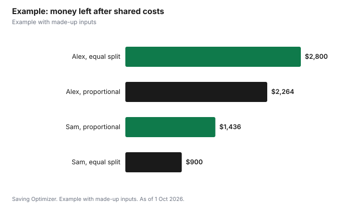

Weddings · Canada
Merging Finances After the Wedding in Canada: Joint, Separate or Hybrid Accounts, Debts and Beneficiaries
After the wedding, choose one of three systems for your money: everything joint, a hybrid of personal accounts plus a joint account for shared bills, or fully separate finances with shared costs split. Canada's Financial Consumer Agency (FCAC) describes all three and says to agree on how often you transfer money, what share each person contributes (50/50 or by income), and what happens if one income drops. Before opening a joint account, know that each holder is responsible for the other's transactions, including overdraft debt. Then do the paperwork: beneficiaries and a TFSA successor holder, insurance, and each person's debts out in the open.
Key takeaways
- Pick a system: all joint, hybrid or separate.
- Agree on 50/50 or income-based contributions.
- Joint account holders are responsible for each other's transactions.
- Co-applicants on a credit card owe the balance equally; authorized users do not.
- Name beneficiaries and a TFSA successor holder where allowed.
- Example with made-up inputs: a proportional split.
Start with the conversation
FCAC suggests getting a full understanding of each other's financial situation and approaches to money before deciding how to manage it together. Put numbers on the table: take-home pay, every debt with its rate and payment, savings and investment balances, credit scores, and any money you send to family. Then talk about habits: who tracks spending, how much either person can spend without checking in, and how you each feel about debt. A short written summary of what you agree avoids arguments later, and makes the yearly review simple.
Joint, separate or hybrid accounts
| System | How it works | Watch out for |
|---|---|---|
| All joint | Pool incomes; pay all expenses from a shared account | Each holder is responsible for all transactions |
| Hybrid | Personal accounts for individual spending; joint account for shared expenses | Agreeing on contributions |
| Separate | Each keeps their own; shared expenses are split | FCAC notes it may be harder to divide payments to different lenders or companies |
FCAC says to ask your bank what happens to a joint account if one holder dies, and notes that in some provinces the survivor may not be able to access the account. Banks must give key information about joint accounts when you open one or convert a personal account to joint.
Splitting bills fairly
There are two common approaches: equal shares, or shares in proportion to income. Proportional splits leave each person with a similar share of their own pay after shared costs. Whatever you choose, list every shared expense (housing, utilities, groceries, insurance, transport, subscriptions, savings goals), automate transfers to match pay dates, and agree on what counts as shared. Review the split yearly or when incomes change, and keep some personal spending money for each person that needs no discussion.
Credit cards and loans
| Role | Responsible for the balance? | Builds credit history? |
|---|---|---|
| Primary cardholder | Yes, including authorized users' purchases | Yes |
| Co-applicant (co-borrower) | Yes, equally | Ask the issuer |
| Authorized user or additional cardholder | No | FCAC says no |
| Co-signer on a loan | Yes, equally | Ask the lender |
Debt brought into the marriage
Talk openly about student loans, credit cards, car loans and lines of credit. FCAC says that if you co-sign a loan, you become equally responsible for repaying it. Under Ontario's Family Law Act, net family property on separation is calculated after deducting each spouse's debts and the net value of property (other than a matrimonial home) they owned on the date of marriage, so debts at marriage affect the calculation. Consolidating a partner's debt into a joint loan makes you equally responsible for it; consider whether helping pay it down from your own account is a better fit.
Deposit insurance
CDIC insures eligible deposits at member institutions up to $100,000 per category, including principal and interest, with each category insured separately. Joint deposits are their own category, separate from each person's own deposits, TFSAs, RRSPs, RESPs and FHSAs, so a couple can have more than $100,000 covered at one institution. Check CDIC's list for whether a product is eligible.
Beneficiaries and insurance
- TFSA: the CRA says that in provinces that recognize TFSA beneficiary designations, a survivor can be named successor holder; the TFSA continues and its value and later income stay sheltered.
- RRSPs, RRIFs, pensions and life insurance: review each beneficiary designation; ask your provider how to change it.
- Workplace benefits: FCAC notes your workplace may offer a family health or dental plan; add your spouse if it makes sense.
- Home, tenant and car insurance: FCAC says to update policies so they cover your partner and shared belongings.
- Wills and powers of attorney: review them after marriage with a lawyer.
Tax credits couples can share
FCAC's guide for couples lists ways being married can affect tax: a non-refundable credit if your spouse has a lower income, pooling charitable donations so one person claims them all, having the lower-income spouse claim medical expenses, rules on child care expenses, and pension income splitting. Update your marital status with the CRA after the wedding; see CRA marital status after the wedding.
Shared goals
- Emergency fund target and where it sits.
- Debt payoff order.
- Home down payment, with each person's FHSA and TFSA room.
- Retirement savings, each with their own RRSP and possibly a spousal RRSP.
- Children, travel or other goals, with dates and monthly amounts.
Plan for the first month
- Share full balances: accounts, debts, credit scores.
- Choose a system and a split.
- Open the joint account if needed and set automatic transfers.
- Update beneficiaries, TFSA successor holder, insurance and benefits.
- Update your marital status with the CRA.
- Book a yearly money check-in.
Example with made-up inputs
These numbers are an example with made-up inputs. Alex takes home $5,200 a month and Sam $3,300, a total of $8,500. Shared costs are $4,800 a month. An equal split is $2,400 each, leaving Alex $2,800 and Sam $900. A proportional split puts Alex at 61.2% ($2,936) and Sam at 38.8% ($1,864), leaving Alex $2,264 and Sam $1,436, each about 43.5% of their pay.
| Alex | Sam | |
|---|---|---|
| Take-home pay | $5,200 | $3,300 |
| Equal split | $2,400 | $2,400 |
| Left after equal | $2,800 | $900 |
| Proportional split | $2,936 | $1,864 |
| Left after proportional | $2,264 | $1,436 |

Common mistakes
- Opening a joint account without agreeing how to use it.
- Co-signing a partner's debt without understanding equal responsibility.
- Forgetting beneficiary designations from before the marriage.
- Not adding a spouse to insurance or benefits.
- Never revisiting the split.
Related: marriage contracts and RRSP vs TFSA first.
Sources
- Financial Consumer Agency of Canada, Managing money as a couple; Joint bank accounts; Joint credit cards and authorized users, canada.ca, as of 1 Oct 2026.
- Canada Deposit Insurance Corporation, What's covered, cdic.ca, as of 1 Oct 2026.
- Canada Revenue Agency, Death of a TFSA holder: successor holder, canada.ca, as of 1 Oct 2026.
- Family Law Act, R.S.O. 1990, c. F.3, s. 4(1), Ontario e-Laws, as of 1 Oct 2026.
- Incomes and expenses in the example are made-up inputs.
Frequently asked questions
Should married couples have a joint bank account?
It is a choice. FCAC describes all-joint, hybrid and separate systems. Joint account holders are responsible for each other's transactions.
Am I responsible for my spouse's credit card debt?
Not if you are only an authorized user. Co-applicants are equally responsible, and co-signers are equally responsible for loans.
What happens to a joint account if one spouse dies?
Ask your bank. FCAC says in some provinces the survivor may not be able to access the account.
Is a joint account covered by CDIC?
Eligible joint deposits are a separate CDIC category, insured up to $100,000 per member institution.
Can my spouse inherit my TFSA tax-free?
In provinces that recognize TFSA beneficiary designations, a survivor named as successor holder takes over the TFSA and it stays tax-sheltered.
How should we split bills?
Equal shares or shares in proportion to income are both common; agree on what counts as shared and review it yearly.
Researched and drafted with AI assistance and fact-checked against official Canadian sources. How we create content.
Disclosure: Saving Optimizer may earn a commission if a partner link is added later. No partnership is claimed on this page. Education only, not financial advice.